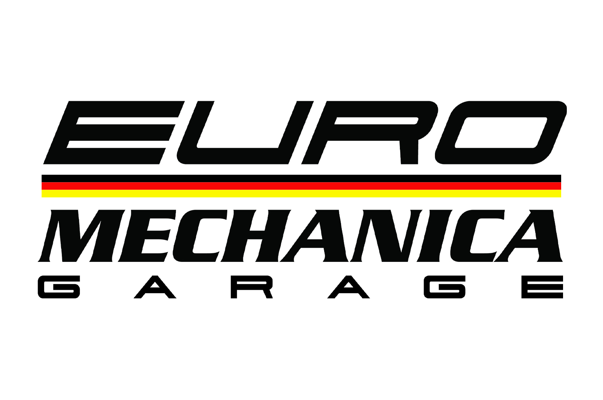
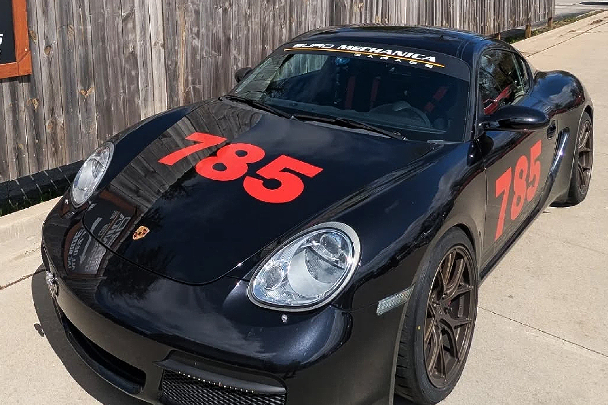
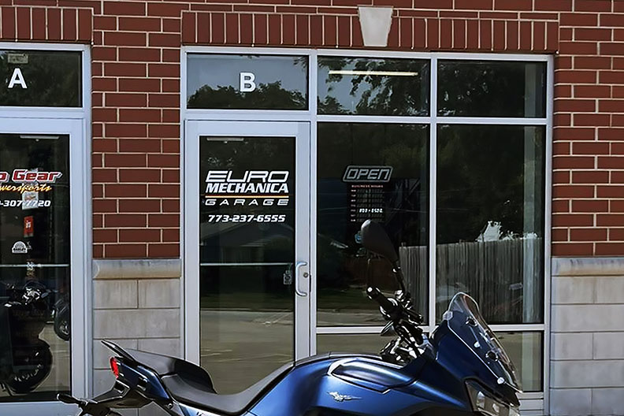
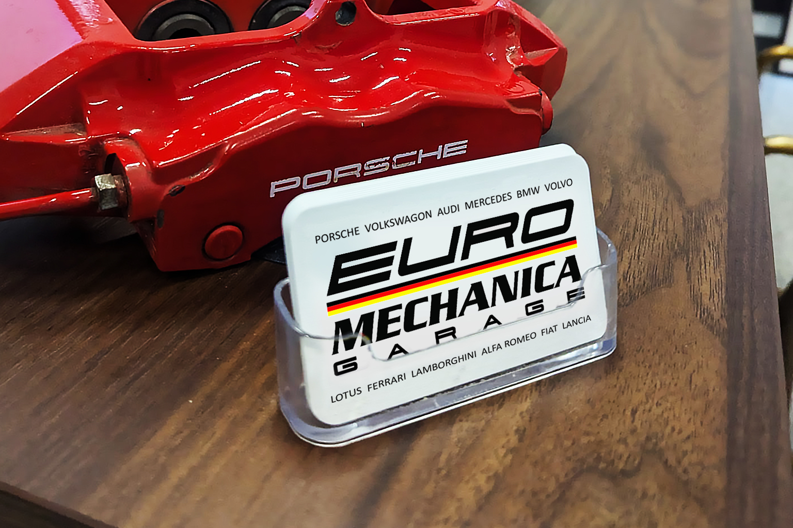
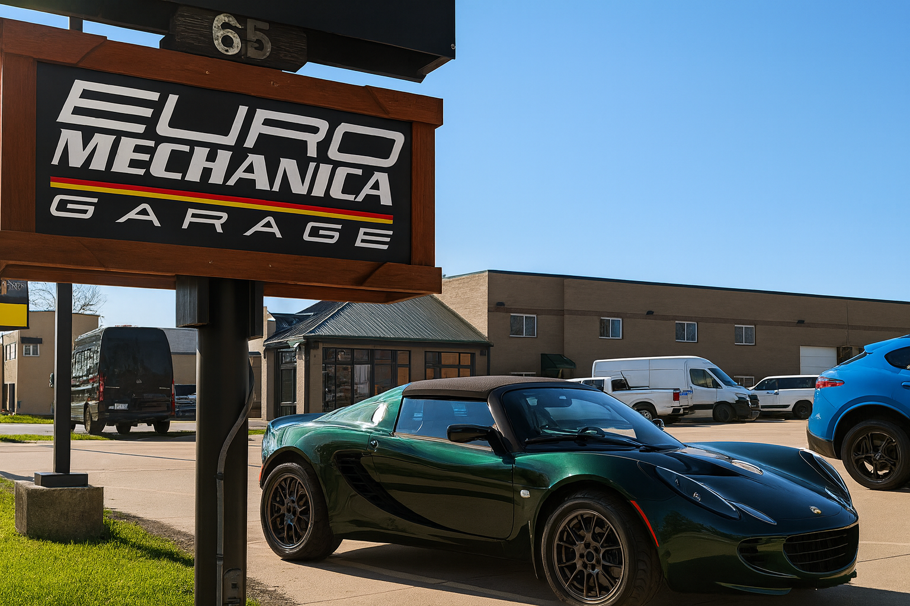
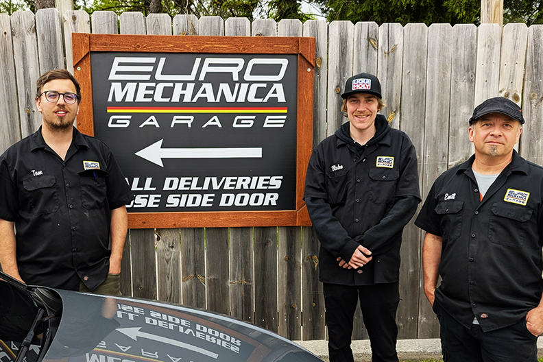
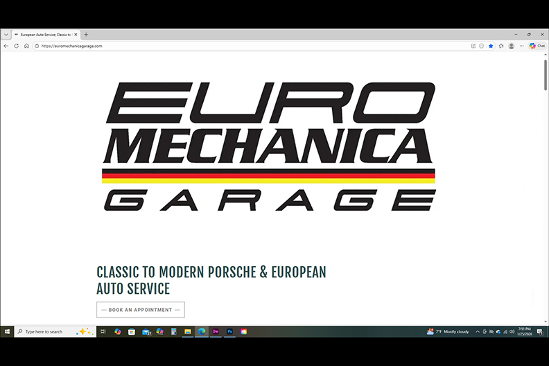
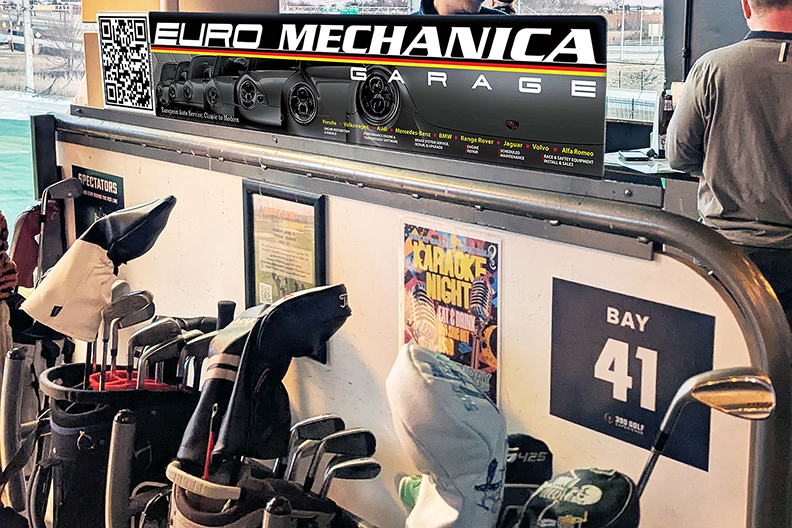
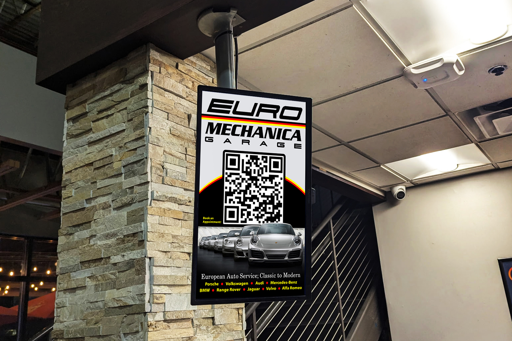
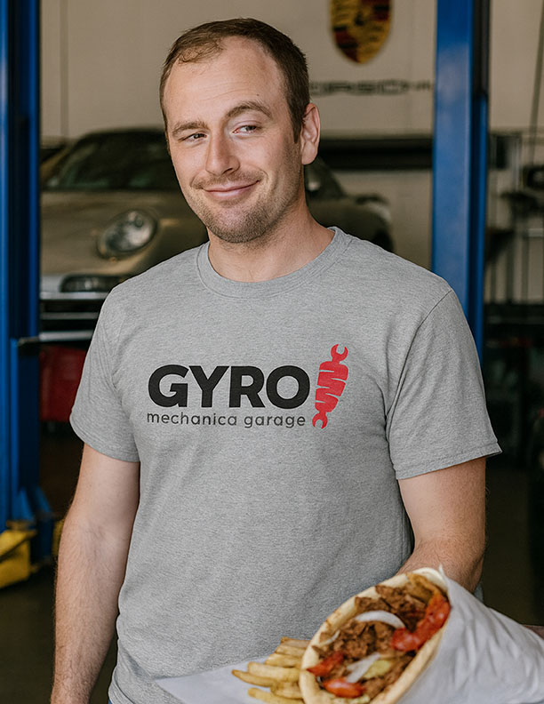

Euro Mechanica Garage — a European automotive specialist focused on precision engineering, performance tuning, and premium service. The client needed a modern, industrial‑inspired identity that communicated precision, trust, and high‑performance European automotive expertise.
This showcase highlights the full suite of branding applied across signage, uniforms, and other marketing assets. The design is versatile and works in both a dark and light themed applications. It can be restructured and applied in every application needed from tall to wide.







These next panels showcase a marketing campaign run throughout an upscale Golf Range. The ads are clean with modern typefaces and minimal distractions. The use of QR codes make it easy for potential customers to contact the shop or find more information.



Novelty Tees have a home in every shop across America. Euro Mechanica Garage wanted their own KFC bucket of wrenches with the Colonel wearing the commonly seen hat of one of the owners at the shop.

The similar sounding word play here and similarly designed logo to Kronos foods, maker of Gyros, made for a fun tee shirt design.
If you’d like to build something with this level of intention
click here now to contact me.